I am currently a researcher in the Visual Computing Center of
Tencent AI Lab. I received my M.S and Ph.D. degrees from the Department of Computer and Information Science,
University of Macau, under the supervision of Dr.
Chi-Man Pun in 2018 and 2021 respectively. I received my B.Sc degree in Computer Science from
Xidian University.
Currently, I am working on designing novel applications for image/video generation, translation and editing (
especially in the ACG area !!!) using AIGC related techniques.
[We are always hiring self-motivated students as research interns for AIGC-related research topics, please drop me an email if you are interested.]
[I am always open to any research discussions 😊 .]
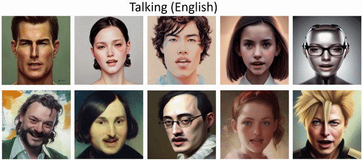
SadTalker: Learning Realistic 3D Motion Coefficients for Stylized Audio-Driven Single Image Talking Face Animation
Wenxuan Zhang 🧑💻,
Xiaodong Cun 🧑💻,
Xuan Wang,
Yong Zhang,
Xi Shen, Yu Guo, Ying Shan, Fei Wang
Computer Vision and Pattern Recognition (CVPR), 2023
arXiv
/
Online Demo
/
Project Page
/
Github
Top 10 you won't miss paper of CVPR 2023 (voxel51.com).
Top 10 Most Github Star CVPR paper (github.com).
VideoReTalking: Audio-based Lip Synchronization for Talking Head Video Editing In the Wild
Kun Cheng 🧑💻,
Xiaodong Cun 🧑💻📮,
Yong Zhang,
Menghan Xia,
Fei Yin,
Mingrui Zhu,
Xuan Wang,
Jue Wang, Nannan Wang
SIGGRAPH Asia (Conference Track), 2022
arXiv
/
Project Page
/
Github
Top 10 Most Github Star SIGGRAPH paper (github.com).
VideoCrafter1: Open Diffusion Models for High-Quality Video Generation
Haoxin Chen 🧑💻, Menghan Xia 🧑💻, Yingqing He 🧑💻,
Yong Zhang 🧑💻,
Xiaodong Cun🧑💻, Shaoshu Yang, Jinbo Xing, Yaofang Liu, Qifeng Chen,
Xintao Wang, Chao Weng,
Ying Shan
Technical report, 2023
FateZero: Fusing Attentions for Zero-shot Text-based Video Editing
International Conference on Computer Vision (ICCV Oral), 2023
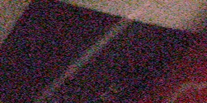
Uformer: A General U-Shaped Transformer for Image Restoration
Computer Vision and Pattern Recognition (CVPR), 2022
arXiv
/
Github
Top 10 most influence paper of CVPR 2022 (paperdigest.org).
X-Adapter: Adding Universal Compatibility of Plugins for Upgraded Diffusion Model
Lingmin Ran,
Xiaodong Cun, Jia-Wei Liu, Rui Zhao, Song Zijie,
Xintao Wang, Jussi Keppo,
Mike Zheng Shou
ArXiv, 2023
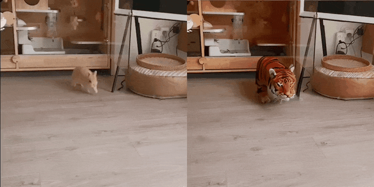
MagicStick🪄: Controllable Video Editing via Control Handle Transformations
ArXiv, 2023
AnimateZero: Video Diffusion Models are Zero-Shot Image Animators
Jiwen Yu,
Xiaodong Cun 📮, Chenyang Qi, Yong Zhang,
Xintao Wang, Ying Shan, Jian Zhang
ArXiv, 2023
Sketch Video Synthesis
ArXiv, 2023
SadTalker: Learning Realistic 3D Motion Coefficients for Stylized Audio-Driven Single Image Talking Face Animation
Wenxuan Zhang 🧑💻,
Xiaodong Cun 🧑💻,
Xuan Wang,
Yong Zhang,
Xi Shen, Yu Guo, Ying Shan, Fei Wang
Computer Vision and Pattern Recognition (CVPR), 2023
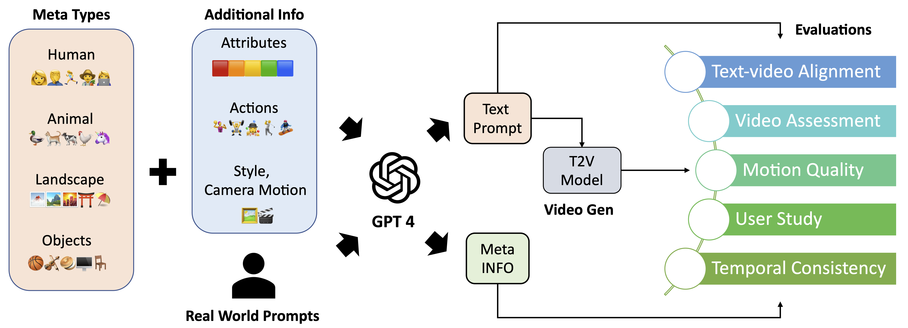
EvalCrafter: Benchmarking and Evaluating Large Video Generation Models
ArXiv, 2023
ScaleCrafter: Tuning-free Higher-Resolution Visual Generation with Diffusion Models
ArXiv, 2023
TaleCrafter: Interactive Story Visualization with Multiple Characters
SIGGRAPH Asia (Conference Track), 2023
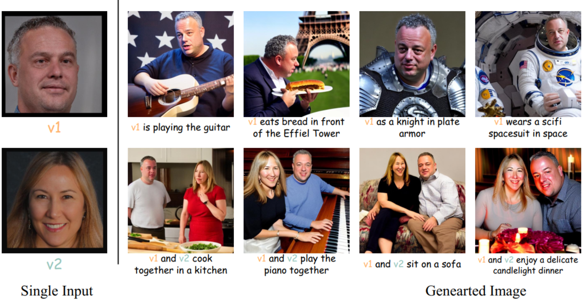
Inserting Anybody in Diffusion Models via Celeb Basis
NeurIPS, 2023
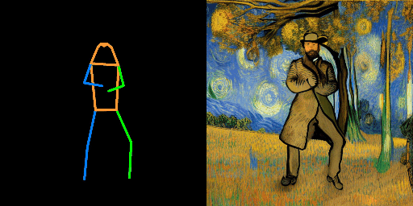
Follow Your Pose: Pose-Guided Text-to-Video Generation using Pose-Free Videos
ArXiv, 2023
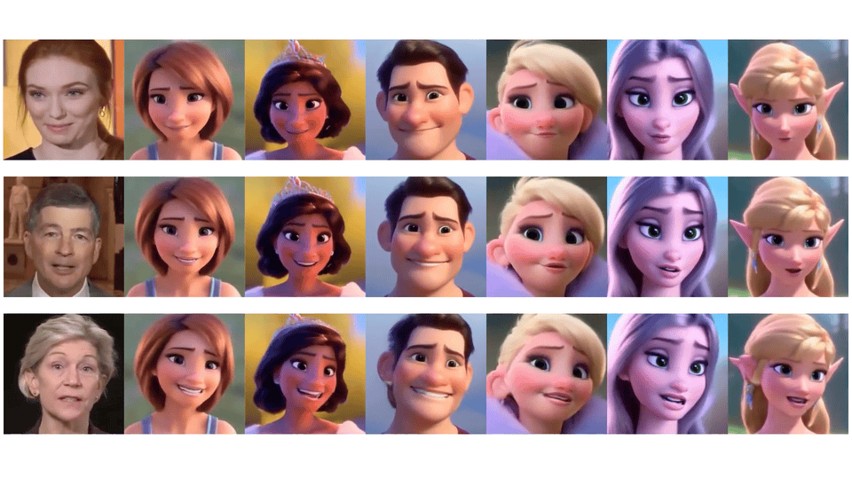
ToonTalker: Cross-Domain Face Reenactment
Yuan Gong,
Yong Zhang,
Xiaodong Cun,
Fei Yin,
Yanbo Fan,
Xuan Wang, Baoyuan Wu, and Yujiu Yang
International Conference on Computer Vision (ICCV), 2023
LivelySpeaker: Towards Semantic-aware Co-Speech Gesture Generation
International Conference on Computer Vision (ICCV), 2023
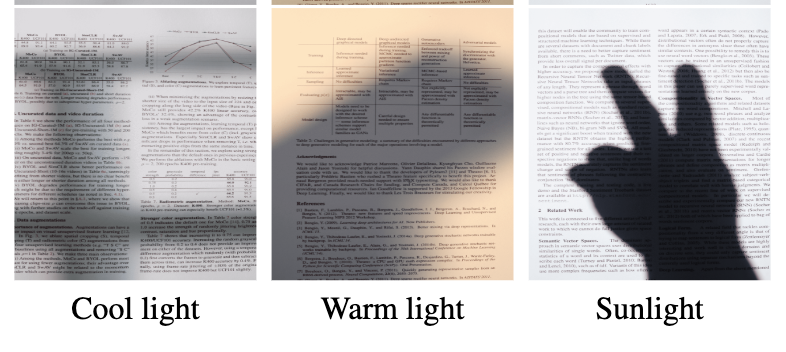
High-Resolution Document Shadow Removal via A Large-Scale Real-World Dataset and A Frequency-Aware Shadow Erasing Net
International Conference on Computer Vision (ICCV), 2023
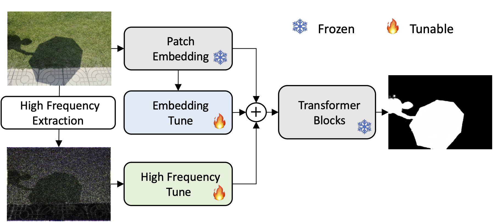
Explicit Visual Prompting for Low-Level Structure Segmentations
Weihuang Liu,
Xi Shen ,
Chi-Man Pun 📮,
Xiaodong Cun 📮
Computer Vision and Pattern Recognition (CVPR) & Journal Submission, 2023
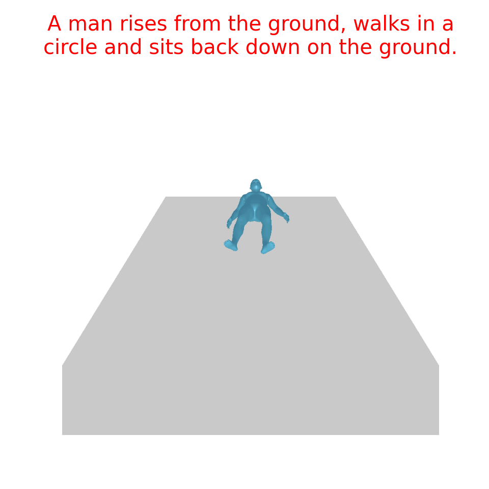
T2M-GPT: Generating Human Motion from Textual Descriptions with Discrete Representations
Jianrong Zhang 🧑💻, Yangsong Zhang 🧑💻,
Xiaodong Cun,
Shaoli Huang,
Yong Zhang, Hongwei Zhao, Hongtao Lu,
Xi Shen 📮
Computer Vision and Pattern Recognition (CVPR), 2023
3D GAN Inversion with Facial Symmetry Prior
Fei Yin,
Yong Zhang,
Xuan Wang, Tengfei Wang,
Xiaoyu Li, Yuan Gong,
Yanbo Fan,
Xiaodong Cun, Ying Shan, Cengiz Oztireli, Yujiu Yang
Computer Vision and Pattern Recognition (CVPR), 2023
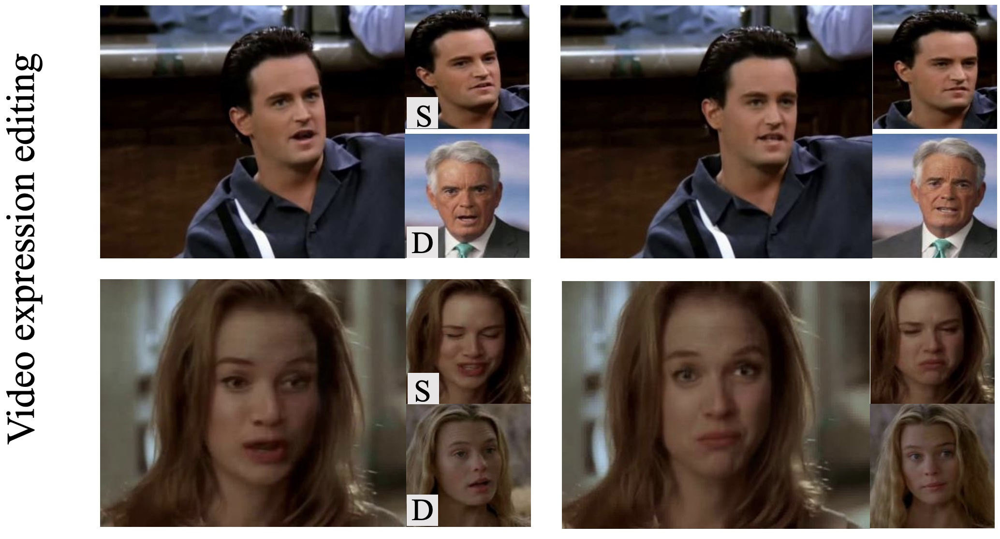
DPE: Disentanglement of Pose and Expression for General Video Portrait Editing
Youxin Pang,
Yong Zhang, Weize Quan,
Yanbo Fan,
Xiaodong Cun, Ying Shan, Dong-ming Yan
Computer Vision and Pattern Recognition (CVPR), 2023
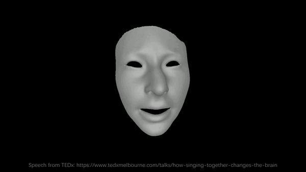
CodeTalker: Speech-Driven 3D Facial Animation with Discrete Motion Prior
Computer Vision and Pattern Recognition (CVPR), 2023
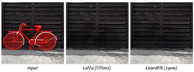
CoordFill: Efficient High-Resolution Image Inpainting via Parameterized Coordinate Querying
AAAI Conference on Artificial Intelligence (AAAI, Oral), 2023
VideoReTalking: Audio-based Lip Synchronization for Talking Head Video Editing In the Wild
Kun Cheng 🧑💻,
Xiaodong Cun 🧑💻📮,
Yong Zhang,
Menghan Xia,
Fei Yin,
Mingrui Zhu,
Xuan Wang,
Jue Wang, Nannan Wang
SIGGRAPH Asia (Conference Track), 2022
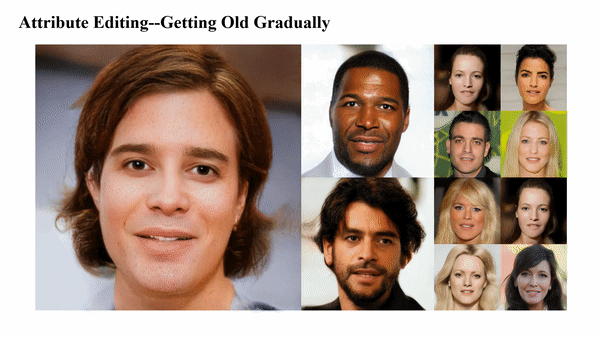
StyleHEAT: One-Shot High-Resolution Editable Talking Face Generation via Pretrained StyleGAN
Fei Yin,
Yong Zhang,
Xiaodong Cun, Mingdeng Cao,
Yanbo Fan,
Xuan Wang, Qingyan Bai, Baoyuan Wu,
Jue Wang, Yujiu Yang
European Conference on Computer Vision (ECCV), 2022
VideoCrafter1: Open Diffusion Models for High-Quality Video Generation
Haoxin Chen 🧑💻, Menghan Xia 🧑💻, Yingqing He 🧑💻,
Yong Zhang 🧑💻,
Xiaodong Cun🧑💻, Shaoshu Yang, Jinbo Xing, Yaofang Liu, Qifeng Chen,
Xintao Wang, Chao Weng,
Ying Shan
Technical report, 2023
Spatial-Separated Curve Rendering Network for Efficient and High-Resolution Image Harmonization
Jingtang Liang 🧑💻 ,
Xiaodong Cun 🧑💻 ,
Chi-Man Pun,
Jue Wang
European Conference on Computer Vision (ECCV), 2022
FateZero: Fusing Attentions for Zero-shot Text-based Video Editing
International Conference on Computer Vision (ICCV Oral), 2023
Uformer: A General U-Shaped Transformer for Image Restoration
Computer Vision and Pattern Recognition (CVPR), 2022
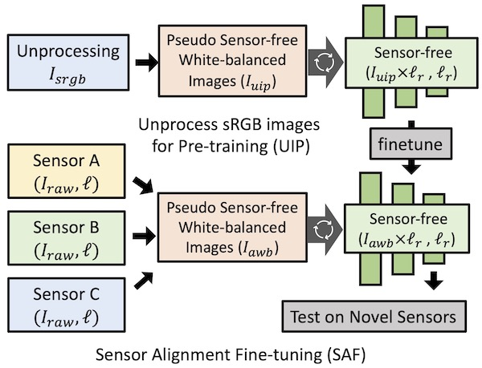
Learning Enriched Illuminants for Cross and Single Sensor Color Constancy
Xiaodong Cun 🧑💻, Zhendong Wang 🧑💻,
Chi-Man Pun, Wengang Zhou, Jianzhuang Liu, Xu Jia, Houqiang Li
Preprint, 2021
Split then Refine: Sequential Attention-guided ResUNets for Blind Single Image Visible Watermark Removal
Xiaodong Cun,
Chi-Man Pun
AAAI Conference on Artificial Intelligence (AAAI), 2021
Defocus Blur Detection via Depth Distillation
Xiaodong Cun,
Chi-Man Pun
European Conference on Computer Vision (ECCV), 2020
Improving the Harmony of the Composite Image by Spatial-Separated Attention Module
Xiaodong Cun,
Chi-Man Pun
IEEE Trans. on Image Processing (TIP), 2020
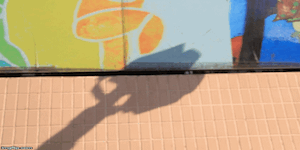
Towards Ghost-free Shadow Removal via Dual Hierarchical Aggregation Network and Shadow Matting GAN
Xiaodong Cun,
Chi-Man Pun, Cheng Shi
AAAI Conference on Artificial Intelligence (AAAI), 2020
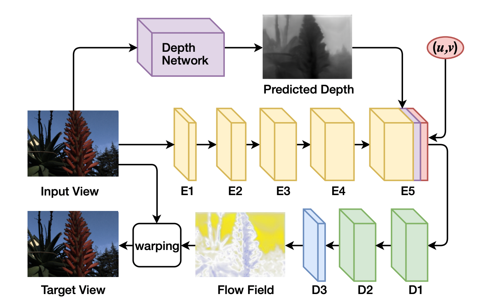
Depth Assisted Full Resolution Network for Single Image based View Synthesis
SIGGRAPH Poster, 2018
/
IEEE CG&A, 2018